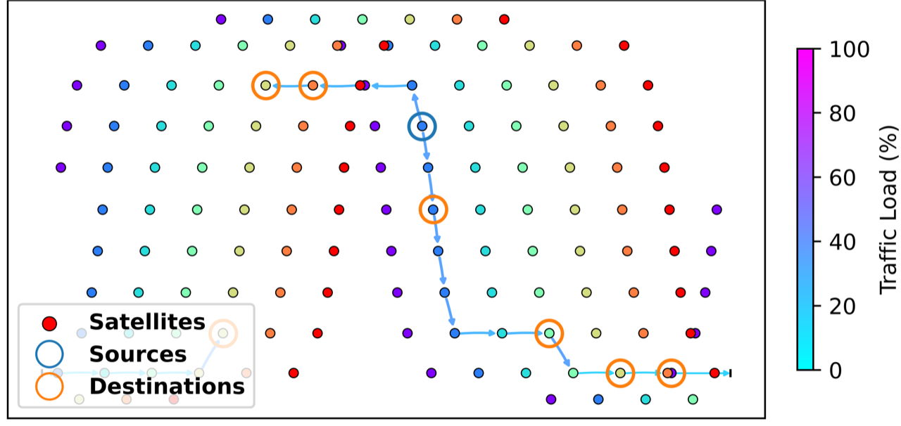

Research projects and publications
Satellite networks

Decentralized satellite routing
Satellites learn where to forward each packet using feedback from their neighbors.


Multicast routing and downlink allocation
Routing the same data to several destinations over shared satellite links.
Lunar rover teams
Publications
Journals
-
Continual deep reinforcement learning for decentralized satellite routing
, B. Soret, I. Leyva-Mayorga, and P. Popovski. IEEE Transactions on Communications, 2025. DOI: 10.1109/TCOMM.2025.3562522.
-
Routing and downlink resource allocation for multicast traffic in LEO satellite constellations
, I. Leyva-Mayorga, J. J. Nielsen, and B. Soret. International Journal of Satellite Communications and Networking, 2026. DOI: 10.1002/sat.70086.
Conferences
-
Learning decentralized routing policies via graph attention-based multi-agent reinforcement learning in lunar delay-tolerant networks
, B. Soret, M. Sanchez Net, A. Cauligi, and F. Rossi. Accepted for presentation at the International Symposium on Planetary Robotics (iSpaRo), Sendai, Japan, 2025.
-
An open source multi-agent deep reinforcement learning routing simulator for satellite networks
, M. Thorsager, I. Leyva-Mayorga, and B. Soret. In Proceedings of SPAICE2024: The First Joint European Space Agency / IAA Conference on AI in and for Space, pp. 420-424, Sep. 17-19, 2024, ESA European Centre for Space Applications and Telecommunications (ECSAT), Oxford, UK. DOI: 10.5281/zenodo.13885645.
-
Multi-Agent Deep Reinforcement Learning for Distributed Satellite Routing
and B. Soret. In 2024 IEEE International Conference on Machine Learning for Communication and Networking (ICMLCN), Stockholm, Sweden, 2024, pp. 1-2. DOI: 10.1109/ICMLCN59089.2024.10624767.
-
Q-learning for distributed routing in LEO satellite constellations
B. Soret, I. Leyva-Mayorga, , and M. D. Thorsager. In 2024 IEEE International Conference on Machine Learning for Communication and Networking (ICMLCN), Stockholm, Sweden, 2024, pp. 208-213. DOI: 10.1109/ICMLCN59089.2024.10624807.
Under review
-
Decentralized graph attention-based multi-agent reinforcement learning for communications in autonomous lunar rover swarms
, B. Soret, M. Sanchez Net, A. Cauligi, and F. Rossi. Under review, 2026.
Manuscripts
-
Open-World, Communication-Aware Multi-Robot Exploration with Vision Language Models
, B. Soret, M. Sanchez Net, F. Rossi, and A. Cauligi.